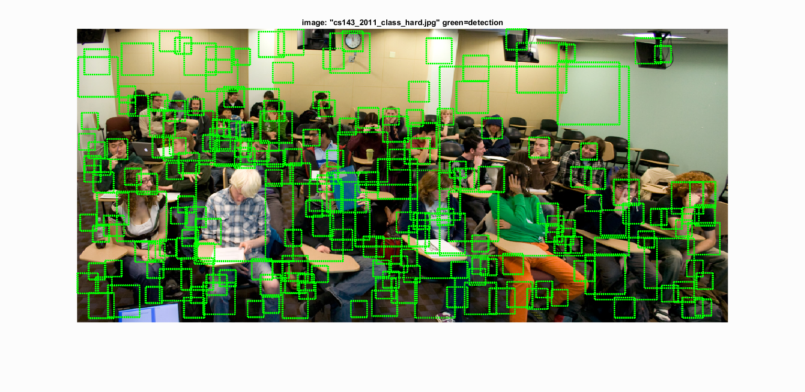

Project 5 / Face Detection with a Sliding Window
This report discusses techniques for detecting faces in images. It starts off by discussing how a classification model can be trained with both positive (images which contain faces) and negative (images which do not contain faces) instances. It then goes on to talk about how the detections are run for on the test data. This report also discusses how hard negative mining will affect the performance of a classifier.
In addition to the above, an experiment on cascading the SVM with KNN has been featured. Results pertaining to using LFW dataset (http://vis-www.cs.umass.edu/lfw/) have also been added. A few examples of images with bounding boxes after classification are shown. Accuracy values, Precision-recall curves are shown wherever necessary.
HOG descriptors for positive and negative training data
HOG or Histogram of Gradients are features which are used in object detection. These are found by dividing image into cells with one histogram in each. A template containing a certain number of cells is considered to be the window in which the features are matched for. In this regard, the parameter HOG cell size is very important. Since the HOGs are not overlapping, a smaller cell size will result in a denser feature space, which helps in improving accuracy (becomes evident in last section of this report), however it is computationally intensive. Some sample HOG features are visualized below:
The negative training data is accumulated over multiple scales from within the given limited number of images. This is an advantage because since the image is known to not have a face, any downsampled image will also not have one. This made it easier for data accumulation. It has been observed that the lower the scale factor of downsampling, the better the quality of data since denser features are gathered. However this is again a computationally expensive operation. Also there is a chance of blowing up the training data with negative instances. Therefore, a cap is put on total number of negative samples (around 20K) and features are sampled using random permutation of cells.
SVM training and Sliding Window Detector
Once the features are found, it is time to train the classifier. Choosing a LAMBDA value of 0.00001, SVM is trained. The distance from and orientation of features with respect to SVM Hyperplane tells the label of a particular instance. This measure is known as the 'Confidence', the higher the confidence the stronger is the chance of detection being a true positive. However, in order not to miss the detections a low threshold is recommended to be chosen - for example, -0.1. HOG features are extracted from each image at multiple scales and whichever has the SVM confidence higher than the threshold is added as a potential candidate for face. Per image, all these detections are sent for non-maximum supression so that overlapping bounding boxes are retained as only one of those (>1 bounding boxes with >50% overlap are anyway pointing to nearly same area).
Hog feature visualization, Precision Recall curve and detections on some images have been shown below:

Grad Credit
Hard Negative Mining
Hard negative mining is a technique which is used to add negative instances which are sure to be non-faces to the training data. The idea is to reduce the number of false positives, there by increasing precision. To do this, non-face dataset is passed to the sliding window detector. If any of the feature template in any of these images crosses the minimum threshold, this was going to be a false positive - but we know for a fact that there's no way for these images to contain a face.Therefore, these are explicitly gathered as negative instances and are later used in re-training the SVM. The results came out to be around 81% accuracy. As a lot of random negative examples have already been used in training the SVM already, this addition hasn't helped much. However, since the number of positive examples stayed the same, this training data might have been prone to overfitting to negative instances and hence the reduction in accuracy.
Results can be seen below:
Extra Credit
Results of flipping Positive and Negative training examples
To increase the number of positive and negative examples, a technique of flipping the image and adding the corresposnding HOG features to training data can be used. This is nothing but the flipped structure of HOG feature itself. With this technique, the CalTech data gave ~13K features and Random negative data gave ~38K features. Using this data and a HOG cell size of 3, gave rise to the best accuracy with SVM classification - 91%. This is expected because the relative number of positive examples has now increased compared to the base implementation. The results can be seen below:
Detections on extra test data with these settings:
Additional KNN Classification
As an experiment, KNN classifier has been added to the already trained SVM model for classification. The idea is to further filter the detections based on a second classifier. The results of SVM are basically those detections which fall above a certain threshold. Once this threshold is crossed, the feature vector of this detection is checked for its 5 nearest neighbors in the training data. The detection is passed on to non-max supression and potentially as a bounding box later on only if the majority of nearest neighbors label it as a positive instance. The performance of this ensemble classifier can be seen in below figures:
Results:
Results with LFW dataset of positive training examples
In order to test how the classification changes with additional positive training data, a survey dataset called 'Labeled Faces in the Wild' has been used. This dataset contains images which have been adjusted for alignment, using a technique called as 'Deep Funneling'. It is an unsupervised alginment of real-world, complex images such as factors such as pose, etc do not affect a face detection algorithm. A few example images can be seen below:
Adding this data to training led to following results: